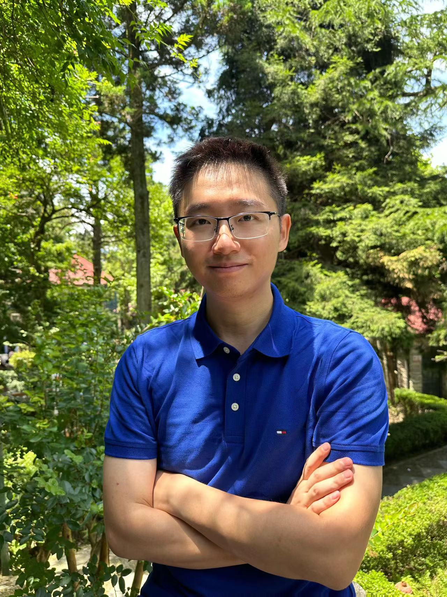

I am a research fellow at NTU, working at the intersection of neuroscience, AI, and brain-computer interfaces. My research focuses on understanding the spatiotemporal neural dynamics of human cognition using multimodal neuroimaging (EEG, fMRI, MEG, PET), and translating these insights into non-invasive speech decoding BCIs.
I received my BS in Engineering Physics from Tsinghua University, and my PhD in medical imaging from the University of Chinese Academy of Sciences (Institute of High Energy Physics), mentored by Prof. Baoci Shan. I am currently a postdoctoral research fellow at NTU, working with Prof. Cuntai Guan, Prof. Victoria Leong, and Prof. Balazs Gulyas.
Full list: Google Scholar · 20 publications · 212+ citations · h-index: 9
Non-invasive decoding of imagined speech using simultaneous EEG-fMRI. Successfully replicated ventral sensorimotor cortex targets previously only achievable with invasive ECoG.
WritingDual-agent LLM framework modeling mother-infant neural coupling with "dual-layer emergence" — cross-brain GPDC prediction emerging into ASD risk detection.
In ProgressTesting the "Context Sweet Spot" hypothesis: brain-LLM representational alignment peaks at intermediate context lengths during natural conversation.
Experiment DesignDirect gaze gates infant statistical learning via adult-infant neural coupling (AINC). 47 infants, dual-centre (UK + Singapore), OHBM 2025.
WritingDecoding gait patterns from scalp EEG for rehabilitation applications.
In ProgressContrastive graph pooling and multi-atlas fusion methods for explainable brain network classification. Published in IEEE TMI and JBHI.
ActiveCentre for Brain-Computing Research (CBCR), Singapore
Multimodal neuroimaging, covert speech BCI, infant brain development
Institute of High Energy Physics · Advisor: Prof. Baoci Shan
PET/MRI brain imaging, deep learning for neurodegeneration diagnosis
Beijing, China